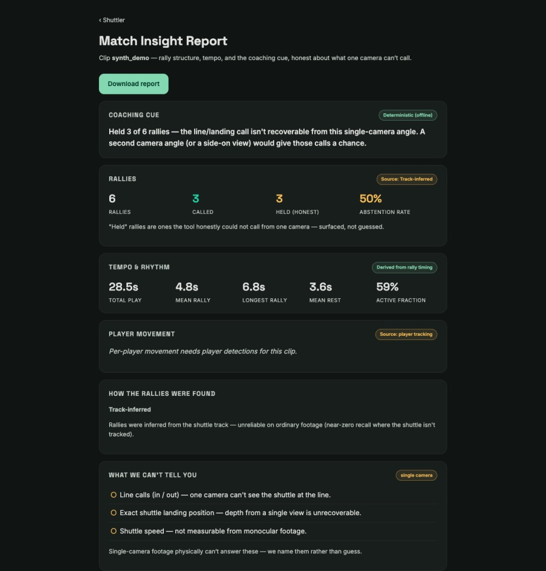

Hi, I'm Vikram.
I've been writing software for a long time, and I still like building things more than talking about them. This page is where I keep the projects I work on outside my day job: what each one is, where it stands, and what I learned along the way.
Lately that's mostly AI coding agents. I'm interested in getting them to build real things, and in how you keep them honest while they do it.
Projects, newest first
-
Ongoing
enCodr
An idea I'm prototyping: keep a presentation's argument (the claims, the evidence, the ask) as structured source, and generate the slides for each audience from it, instead of rebuilding a deck by hand every time.
What I learned
The model should propose and the application should decide. Plain code compiles the slides and repairs what it can on its own; a model only gets called when a specific check trips, and the budget for that call is set aside before it goes out. It's also my most structured agent build so far: agents write the code in sandboxes, and I approve every ticket before the next one starts.
How it's built
The agent pipeline that writes the code
- TicketI write it and label it ready
- Plannerpicks it up and scopes the work
- Implementerwrites tests first, in a Docker sandbox
- Reviewerhas to open its verdict with PASS
- CI gatereal Postgres and Chromium; fails closed if either is missing
- Mergermerges only on a green check
- Meone ticket per round, then I pick the next
Dashed boxes are me. Design decisions are written up and ratified by me before any agent touches them.
How the product works
One API for people and agents, and an agent loop where the model only proposes. Small things I like about it
- The model never picks colours or pixel positions. Layout belongs to code.
- Shortening a deck has to keep the caveats, not just the headlines.
- Text is measured against the actual font before it's placed, so nothing overflows quietly.
- Module boundaries are checked on every build, so the codebase can't slowly turn into a ball of mud.
-
A claims checker for documents
Checks whether the claims in a document hold up against a set of sourced facts. Every verdict has to point at the fact it relied on.
What I learned
Let plain code do the judging. The language model only works out what a sentence is about; whether it's supported is decided by ordinary checks I can read. To test it, I set up a separate "adversary" that plants bad claims without being able to see the checker's code. Its first full run got two past me, which was the point. It now catches all 37 in its current test set, which is still small.
How it works
Checking a document
- DocumentPDF or Word
- Two extractorsindependent, per format, so one parser's mistakes show up
- Claim mappingthe model matches each sentence to a subject, nothing more
- Ledgersourced facts in Postgres, row-level security
- Checksplain code: figures, precision, how strongly a source supports it
- Verdictpass or fail, every reason cites a ledger row
Testing it with an adversary
- Clean baselinea document that should pass
- Adversaryseparate repo, sandboxed so it can't read the checker
- Plants defectschanged figures, inflated claims, unsourced lines
- Checker runscaught or missed, per defect
- Harmless editsshould not be flagged: 0 of 52 were
Details
- The very first measurement found a bug in my own mapper, which is the best argument I know for measuring early.
- Document text is treated as data, never as instructions to the model.
- Traces carry references to ledger rows, never the claim text itself.
- Database tests run as the real roles, so the access rules are tested, not assumed.
-
to
Shuttler
Badminton analysis from a single phone video. It finds the rallies, tracks the shuttle and suggests something to work on.
What I learned
A phone on a tripod sees a lot less than you'd hope. My first approach, pure geometry, found none of 15 rallies on real footage from a hall full of courts. A vision-language model found 11. So I stopped trying to make it call everything: line calls and winners are left out, and the report says why. Since these are public halls, the blurring step blurs anyone it isn't sure about.
14 seconds on an anonymized clip: shuttle trail, player movement, running score. Plays from YouTube. How it works
The vision pipeline
- Phone videoone camera
- Court calibrationauto-detected, with tap-the-corners as a fallback
- Shuttletracked with TrackNet
- Playersdetected with YOLO, near and far side
- Ralliesfound by a vision-language model reading the players
- Reporttempo, a coaching cue, and what it couldn't call

The report, on a synthetic test clip. "What we can't tell you" is part of the report, not fine print. How the agents built it
- Issuelabelled for an agent
- Developer agentseach in its own worktree
- Pull requestapproval is stripped if the code changes after review
- Reviewer agentsigns a verdict against the exact commit
- Merger agentthe only one allowed to merge
- CI, then deployto Cloud Run
Decisions and handoffs live in a separate coordination repo run with Barony.
Details
- Every phase has a number it has to hit, written into the eval harness. Shuttle detection passes (0.992 on one clip, against 0.85). Rally detection doesn't yet, and the README says so.
- Eight small experiments, one of them repeated at a second venue, to find out what one camera can honestly call. Filming at 120 fps didn't change the answer.
- The blur fails closed: if it isn't sure, it blurs, and a separate check confirms the blur actually landed.
- 178 merged pull requests and 1,184 tests.
-
on
Barony
An open-source tool for running a team of AI coding agents on one repo: who's allowed to do what, and a record of who did what.
What I learned
Writing rules down for agents is not the same as agents following them. When I audited one of my own agent teams, only about half of the written process was actually happening. So Barony blocks what it can before an agent acts, and it's upfront about which rules are only suggestions.
How it works
- Declareeach agent once: persona and manifest files
- baron CLIvalidates, wires up, reports status
- AdaptersClaude Code, code-puppy, pydantic-ai, or generic
- Guardblocks a denied action before the tool runs, where the runtime allows it
- Git recordhandoffs, findings, decisions, signed review verdicts
- Healthnumbers on how well the team is actually behaving
Details
- Every rule is labelled as enforced or only instructed. Six of ten are enforced today, and CI fails an adapter that claims more than it does.
baron healthreports things like reviews that didn't name the commit that got merged, and agents that stalled.- No server and no database: markdown and git, with two Python dependencies.
- The README has a "skip it if" section. It isn't a sandbox and it isn't for everyone.
-
to
TrellisIQ
A garden app. Photograph a plant and it identifies it, gives it a health score and suggests care, then keeps track of it over time.
What I learned
This was my first go at having a small team of agents (two developers, an analyst and a designer) build a whole product while I acted as product owner. They merged 204 pull requests in about five weeks. Speed was never the problem. Knowing what was actually finished was harder, and that's what got me interested in how you keep an agent team honest.
How it works
What it does
- Photo to health score. A vision model identifies the plant, scores it 0 to 100, names the issue and the next thing to do.
- Priority alerts. The plants in the worst shape come first, by email or text, plus a weekly plan built from the garden and the weather.
- Garden map and walk. Zones drawn on a top-down photo. Or film a walk through the garden: it pulls a frame every couple of seconds, drops near-duplicates, and an agent matches each plant it sees to your garden.
- Sun and shade. A sun profile for each garden from solar data, with a shadow overlay on the map.
- Irrigation. Watering lines and schedules, and which dripper feeds which plant.

Dashboard, demo garden. The agent team I put together
- Analyst agenttests the app, reads feedback, files issues
- Claima dev agent takes the issue by label
- Buildeach dev agent in its own clone with its own database
- Pull requestCI plus analyst comments
- Menothing merges without my nod
- Close the loopdev log, decision record, analyst verifies
Rules lived in a shared coordination file: how to claim work, which files only one agent may touch at a time, and how to hand off.
User feedback to fix
- Feedbackfrom a user, in the app
- Quick triagea fast model sets severity, with a five-second limit
- Deeper passa larger model sets priority and drafts the issue
- Judgea third model grades that draft
- FileI click to open the GitHub issue
- Fixa dev agent opens a PR; a webhook tells the user it's fixed
"Similar plants" with embeddings
- Photoof a plant
- Diagnosisa vision model describes species, stage, health, issues
- Embedthe description, not the pixels
- pgvectornearest neighbours in Postgres
- Reranknudges results toward the same plant type
Details
- The analyst agent built a small eval for "similar plants": precision in the top five went from 0.30 to 0.36 after one fix, and the eval itself turned up a real bug. It's one garden of about 56 plants, so it's a feedback loop, not a benchmark.
- The health score is half model, half arithmetic: the model lists what's wrong and how sure it is, and plain code turns that into a 0 to 100 score.
- The garden assistant chats with a fresh snapshot of your garden (plants, health, weather, care log), and anything it suggests doing goes on a confirm card before it's saved.
- Each feature has its own chain of fallback models, and prompts can be edited by an admin without a deploy.
-
Earlier
A micro-drone
A small drone I was teaching to navigate with onboard vision, in Python on PlutoX hardware. It flew and logged telemetry until the sensor module burned out. Parked until I replace it.
Talks and panels
Every so often I get to talk about this stuff with other people who build it.
- Oct 2026 Panelist, AI Realized: Agent Controls and the Governance Gap, SF Tech Week
- Sep 2026 Panelist, Silicon Valley AI Summit (Imagination in Action), Mountain View
- Aug 2026 Roundtable on agentic AI and sandboxing, MIT Media Lab Project NANDA, Palo Alto
Say hi
Email is best: vikramggg@hotmail.com. I'm also on GitHub and LinkedIn.